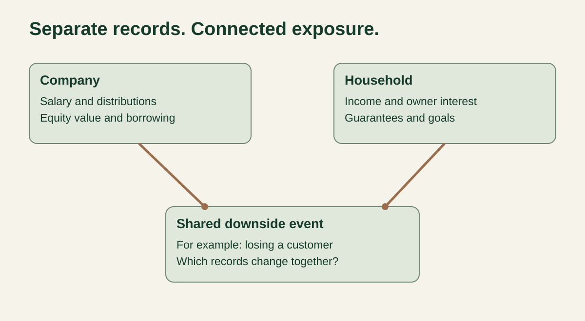
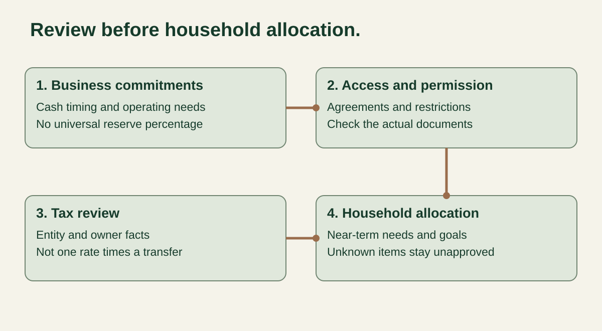

Guide
Business owner wealth planning while you keep the company
Business owner wealth planning starts by deciding what cash can leave the company, what the household needs, and what can be invested outside the business. If you intend to keep the company, a sale cannot be the only answer to your personal financial plan. Map the business and household separately, connect their shared risks, and review each distribution before treating it as available personal wealth.
This guide is for owners of US businesses who are continuing to operate them. It is educational, not individualized investment, tax or legal advice. Valora is not a registered investment adviser and is not arranging advisor matches or introductions at this time.
What are you allocating when you keep the business?
You are allocating cash to three different jobs: keeping the company able to operate, funding the household, and building wealth for goals outside the company. These jobs compete, but they should not share an undifferentiated balance.
Operating cash pays the business's commitments and supports the risks you have chosen to take. Owner income supports household spending and tax payments. Outside wealth serves personal goals with a different timetable. A business expansion, next month's household bills and retirement decades away do not become interchangeable just because the same owner cares about all three.
Start with decisions rather than account labels. Write down the period each pool must support, the obligations already attached to it, and who can authorize a change. A personal account can still be exposed to business obligations through a guarantee; a company account with a large balance may still have payroll, suppliers or other commitments ahead of it. The account name is useful evidence, not the full answer.
How do you map the two balance sheets without counting money twice?
Build a two-balance-sheet exposure map that records access conditions and shared shocks alongside assets and liabilities. Its purpose is to reveal dependencies, not produce a new business valuation.
Record the company on one side and the household on the other. Keep estimated business equity apart from household assets that can actually be used. Ask whoever prepared the valuation how company cash and debt are treated before adding a separate cash balance to the equity estimate. Record loans between owner and company on both sides with their actual terms, rather than treating the receivable as immediately available money.

The two-balance-sheet exposure map
Use one row per exposure. Fill in the evidence and reviewer before relying on a value or an access assumption.
| Business record | Household connection | Shared shock or access condition | Evidence and next review |
|---|---|---|---|
| Operating cash and committed spending. | Potential future distribution, not yet household cash. | Slower collections may delay both operations and owner income. | Cash forecast, payable schedule and distribution authorization. |
| Estimated company equity. | Owner's interest, kept separate from accessible investments. | A business setback can reduce value and income together. | Valuation date, method, debt and cash treatment. |
| Owner compensation and planned distributions. | Household income, spending and tax-payment schedule. | Company performance can change the timing or amount. | Payroll records, actual transfers and CPA-reviewed tax assumptions. |
| Borrowing, leases and owner loans. | Guarantees, pledged assets or a claim against the company. | Terms may connect a company shortfall to personal obligations. | Signed agreements and counsel's explanation of scope. |
| Employee retirement-plan commitments. | Owner retirement assets and funding decisions. | Staffing changes can change eligibility and administration. | Plan documents, census and administrator review. |
The guarantee row deserves its own evidence. For example, the SBA's Form 148 page says individuals owning 20% or more of a small business applicant must provide an unlimited personal guaranty. That statement belongs to the SBA applicant context; it is not a rule for every loan. Have counsel inspect your actual documents, including amendments, rather than assuming that a separate company name removes personal exposure.
What should be checked before a distribution?
Review business obligations and access restrictions before allocating a proposed distribution to the household. A cash balance alone does not establish that the transfer is permitted or prudent.
Use a recurring distribution checklist with a named reviewer and a dated decision. The order below is a planning workflow, not a legal priority rule. Your entity, ownership documents, financing terms and applicable law determine the permissions that need to be checked.

The recurring distribution checklist
- Identify commitments. Reconcile the cash forecast with payroll, suppliers, debt service and known planned spending. Record the timing as well as the total.
- Review operating resilience. Discuss collection delays, seasonal spending, customer concentration and planned investment with the person responsible for the forecast. Document the assumptions behind a reserve decision; this guide supplies no universal percentage.
- Check authorization and restrictions. Have the appropriate reviewer check company documents, financing covenants, guarantee terms and applicable distribution requirements. An unanswered restriction blocks the proposed decision.
- Review tax treatment and timing. Ask the CPA how wages, draws, distributions and allocated income are treated for this owner and entity. Identify required payments and dates without equating the cash transfer to taxable income.
- Assign the household jobs. Separate near-term expenses and reviewed tax provision from money available for longer-term goals. Do not count a future distribution as cash already received.
- Record the decision. Write the authorized amount, unresolved items, responsible people and next review trigger. Revisit the decision if the underlying facts change before the transfer.
A useful output may be a smaller distribution, a delayed decision or a request for better information. It need not be a green light. Disagreement between the operating forecast and a household target is information to resolve, not a gap to cover with an optimistic business valuation.
What does this look like for an owner with uneven income?
Separate business approval from household allocation, even in a strong quarter. A good quarter does not answer every cash-access or tax question.
Consider a fictional owner, Jordan, who keeps a seasonal service business. Jordan is considering a distribution after several invoices are collected. The household expects to replace a vehicle and contribute toward a longer-term goal. Meanwhile, the company has a busy hiring period ahead and a loan agreement that the operating manager has not reviewed for distribution restrictions.
Jordan's first decision is not which investment to buy. The operating manager updates the forecast; counsel checks the agreement; the CPA reviews tax payments; and Jordan lists the household's upcoming cash needs. If the covenant question remains open, the distribution remains unapproved in this worksheet. If a transfer is later authorized, the household allocation uses the amount actually received and the reviewed tax provision, not the company's headline balance.
This is an invented workflow, not a client result, reserve benchmark or recommendation. It shows why the same apparently available dollar can have several claims on it. No sale is required to make the planning question real.
How should taxes fit into a variable distribution schedule?
Build a separate tax-payment review rather than applying one assumed rate to every distribution. Entity classification, income, compensation, withholding and other facts affect the calculation.
The IRS estimated-tax guidance explains that estimated taxes are used to pay taxes on income not subject to withholding. It also explains that, when income is received unevenly during the year, annualizing income and making unequal payments may avoid or lower an underpayment penalty. That is a conditional method requiring the relevant calculation, not permission to wait until the business pays you.
Ask the CPA whether that method is appropriate and which records are needed. IRS Publication 505 provides the annualized-income installment method and worksheets. Do not infer a deadline or safe-harbor amount from this page's example. Confirm the current year, filing facts and federal and state requirements for your situation.
Keep the forecast's tax assumption visible. Label an amount estimated, reviewed or paid, and record the period it covers. If a household tax payment is funded from a distribution, it belongs in the household allocation; if the company has its own tax obligation, it belongs in the company commitments. Do not subtract the same obligation twice.
What does wealth outside the business change?
Outside wealth can reduce dependence on the company, but its location alone does not establish diversification, safety or legal protection. Review what you own and what the money needs to do.
If the outside portfolio is concentrated in the same industry or customers as the company, a common shock may still affect both. The exposure map should ask that question explicitly. The SEC's Investor.gov diversification guidance explains spreading investments across and within asset classes and warns that a narrowly focused fund does not necessarily provide diversification.
The same guidance ties allocation to time horizon and risk tolerance. Money expected to fund a near-term household need needs a different review from money intended for a distant goal. Do not describe a taxable investment account as a safe pool that a business outcome cannot touch. Investments can lose value, and questions about creditor access, pledges or protection require qualified legal review of actual facts.
How do employees change the retirement-plan decision?
Review retirement planning with the workforce and the company's commitments included. An owner-only label cannot replace an eligibility review.
The IRS one-participant 401(k) guidance describes a plan covering a business owner with no employees, or the owner and spouse. It says employees who meet plan eligibility requirements must be included, and explains that the no-testing advantage disappears when eligible employees are hired, subject to the rules described there.
Ask the administrator to review the employee census, plan documents, compensation calculations and administration requirements before choosing a contribution. A retirement contribution competes with other cash uses and may involve employee costs. This guide does not rank it as the biggest tax lever or quote an annual contribution limit. The IRS overview of self-employed retirement plans is a starting point for comparing plan types, not a substitute for checking current-year limits and the plan's actual requirements.
Who should own the recurring review?
Assign the operating forecast, legal permissions, tax calculations and household investment decisions to people qualified for each job. Coordination does not make one person responsible for every discipline.
A practical review asks the operator to explain cash timing, the CPA to explain tax assumptions, counsel to explain restrictions and guarantees, and the financial planner to connect the authorized personal resources to household goals. Agree who records disagreements and what information is still missing.
Get the paid work scope in writing. Ask whether cash-flow planning is included, how coordination is charged, and whether investing a distribution changes compensation. Investor.gov's fee guidance advises asking about transaction and ongoing costs and how the professional is paid. Its Form ADV brochure bulletin explains disclosures about services, fees, conflicts and investment risks. A brochure informs the comparison; the engagement defines the work you are buying.
Before a meeting, summarize amounts, dates and unanswered questions. Do not email a full tax return, account credentials or employee records just to start a conversation. Agree with the relevant professional on a suitable document-sharing method and the minimum records required. For broader professional-selection questions, read the business-owner advisor-fit guide. This page is the recurring decision workflow, not another candidate checklist. Read the broader business-owner planning guide for its wider overview.
What can this worksheet not decide?
This worksheet cannot authorize a distribution, value a company or establish a tax liability. It organizes the facts needed for those decisions.
The map is incomplete if agreements, ownership interests, employee obligations or household exposures are missing. Estimates can become stale. Set review triggers around a major customer change, new borrowing, staffing changes, a changed household need or a revised cash forecast rather than assuming an annual review is enough for every company.
An arithmetic total cannot resolve an unanswered restriction or replace a professional review. The visible checklist works without a calculator: its most important output is a documented decision, including a decision to wait.
The bottom line
You can plan personal wealth while continuing to own the business. Start with a dated exposure map and a distribution decision whose assumptions, reviewers and remaining questions are visible. Build the household plan from authorized resources, while keeping company value, future income and personal obligations in view.
Common questions
How much business cash should an owner distribute?
There is no universal percentage in this guide. Review obligations, operating forecasts, agreements, applicable requirements and taxes before deciding what can leave the company. An unresolved access restriction leaves the proposed distribution unapproved.
Should estimated tax be calculated from the distribution amount?
Not automatically. Entity classification, income, compensation, withholding and other facts affect the calculation. Have the CPA review the tax-payment schedule separately from the cash-transfer schedule.
Can an owner use an owner-only 401(k) after hiring employees?
The plan must include employees who meet its eligibility requirements. Review the employee census and plan documents with the administrator rather than relying on an owner-only label.
Does a taxable investment account make business risk disappear?
No. Outside investments can lose value, and similar industry exposures may still link them to the business. Legal questions about guarantees, pledges and creditor access require review of the actual facts.
Can I count company cash and company value as separate wealth?
Only after checking how the valuation treats company cash and debt. Keep estimated company equity separate from accessible household assets and avoid adding the same economic value twice.
Do I need to sell the business to start wealth planning?
No. You can review recurring distributions, household needs, outside investments and retirement-plan decisions while retaining the company. A sale is a separate planning problem, not a required step in this workflow.
Want help applying this to your own numbers?
Tell us what you are trying to figure out. Valora reviews inquiries and emails next steps; we are not arranging advisor matches or introductions. Do not submit confidential financial documents.
Talk it through